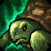
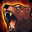
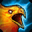

|
Monkeys Agility |
Passive |
Entering a stance grants Udyr 10% attack speed and 5 bonus movement speed for 5 seconds. This effect stacks 3 times.
|
|
Tiger Stance |
Q |
Udyr gains 30 / 40 / 50 / 60 / 70% bonus attack speed for 5 seconds. While in Tiger Stance, Udyr's first and every third basic attack after that are Tiger Strikes which deal an additional 30 / 60 / 90 / 120 / 150 (+ 120 / 135 / 150 / 165 / 180% total AD) physical damage over 2 seconds. Successive Tiger Strikes against the same target will instantly deal all remaining damage of the previous instance in addition to applying a new one. The mana cost of this ability decreases with Udyr's level, down to 28 mana at level 18. |
|  |
Turtle Stance |
W |
Udyr shields himself for 60 / 95 / 130 / 165 / 200 (+50% of ability power) for 5 seconds. While in Turtle Stance, Udyr's first and every third basic attack after that heal him for 2.5% of his maximum health, increasing to up to 5% based on his missing health. The mana cost of this ability decreases with Udyr's level, down to 28 mana at level 18. |
|  |
Bear Stance |
E |
Udyr gains 15 / 20 / 25 / 30 / 35 % increased movement speed and ignores unit collision for 2 / 2.25 / 2.5 / 2.75 / 3 seconds. Udyr dashes slightly forward when attacking a target while the buff is still active, and only when he stuns the target. While in Bear Stance, Udyr's basic attacks stun the target for 1 second. This effect cannot occur on the same target for 6 seconds. The mana cost of this ability decreases with Udyr's level, down to 28 mana at level 18. |
|  |
Phoenix Stance |
R |
Udyr unleashes pulsing waves of fire around himself for 4 seconds, dealing 10 / 20 / 30 / 40 / 50 (+25% of ability power) magic damage each second to all nearby enemies for the duration. While in Phoenix Stance, Udyr's first and every third basic attack after that send out a cone of flame in front of him that deals 40 / 80 / 120 / 160 / 200 (+60% of ability power) magic damage. The mana cost of this ability decreases with Udyr's level, down to 28 mana at level 18. |